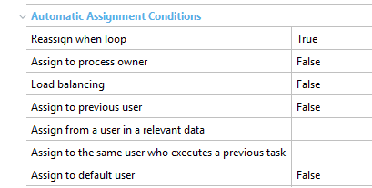

This is a group of properties which allows you to define conditions through which tasks can be automatically assigned. They can be found in a task's properties (in a Business process diagram), under the node Advanced properties>Automatic Assignment Conditions: 
|
| Backlinks |
| Interactive Activity Properties |